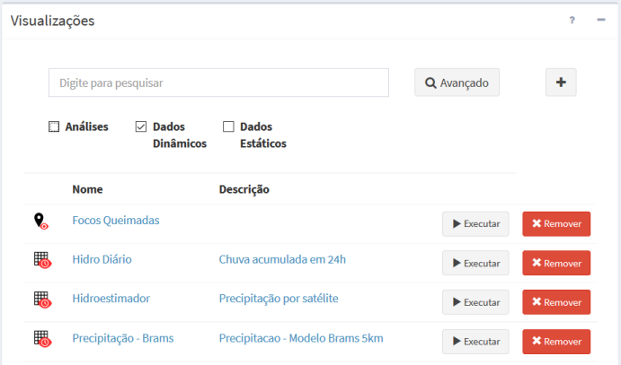

Visualizações
Todos os dados estáticos, dinâmicos e resultados de análises podem ser publicados no “Módulo de Monitoramento” na forma de simples visualizações, visualizações dinâmicas com animação ou alertas com legendas associadas. O alerta, além de produzir uma visualização específica com serviço associado, também é utilizado para criar notificações de situações críticas apontadas a partir dos dados dinâmicos e análises com serviço de alerta associado. A Figura 4.1 mostra a relação entre os serviços de visualização e alerta. A seguir apresentamos as opções de visualização e alerta.

Figura 4.1 – Esquema de um projeto e relações com os serviços. Note que uma visualização recebe dados estáticos, dinâmicos e análises. O alerta recebe dados dinâmicos e análises e utiliza ambos serviços de visualização e alerta para envio de notificações.
As visualizações são utilizadas para publicar dados estáticos (matriciais ou vetoriais), dados dinâmicos (PCD, Ocorrências e Grades) e ainda os dados dinâmicos resultado de análises (Figura 4.1). Resumidamente, temos que:
- Nome de visualização é único para cada projeto do TerraMA2;
- Uma visualização utiliza um serviço correspondente para publicar um dado qualquer da base de dados no módulo monitoramento web.
- Um estilo (legenda) pode ser aplicado a cada dado.
- Uma visualização pode ser de acesso público ou restrito (privado) através de “login” e senha no módulo de monitoramento.
A Figura 4.2 mostra a área de trabalho do menu “Visualizações” com a lista de visualizações disponíveis. Nesta área é possível selecionar uma visualização para fazer alguma edição, criar uma nova visualização ou ainda remover uma existente. Veja a seguir as opções de manipulação.

Figura 4.2 – Módulo de Administração: lista de visualizações.

ADICIONANDO UMA VISUALIZAÇÃO:
Para adicionar uma nova visualização é necessário ter um projeto ativo. No menu de opções selecione “Visualizações” para que a lista de visualizações disponíveis seja apresentada na área de trabalho. Clique no botão “ + ” para adicionar uma nova visualização. Utilize o botão “Salvar” para salvar a visualização. Utilize o botão “Salvar e executar” para salvar a visualização e executar a publicação imediatamente, independente de algum agendamento. Não é permitido nomes de visualizações em duplicidade. Botão “Cancelar” volta à tela anterior sem salvar a visualização. Detalhes da adição de uma visualização veja aqui.
EDITAR UMA VISUALIZAÇÃO:
Para editar uma visualização previamente criada é necessário que um usuário esteja conectado e um projeto ativo. No menu de opções selecione “Visualizações” para que a lista disponível seja apresentada na área de trabalho. Clique sobre o nome ou descrição da visualização desejada para abrir as propriedades. Faça as alterações desejadas e utilize o botão “Salvar” para salvar. Botão “Cancelar” volta à tela anterior sem salvar alterações.
EXECUTANDO UMA VISUALIZAÇÃO:
Para executar uma visualização no menu de opções selecione “Visualizações” para que a lista disponível seja apresentada na área de trabalho. Na linha correspondente a visualização desejada clique em „ Executar. Para acompanhar se a visualização foi executada com sucesso clique “Situação Atual” no menu de opções. Na edição de uma visualização poderá optar por salvar e executar a publicação da visualização.
REMOVENDO UMA VISUALIZAÇÃO:
Para remover uma visualização clique em “Visualizações” no menu de opções para que a lista disponível seja apresentada. Na linha correspondente a visualização desejada clique em “X Remover”. Clique o botão “OK” para confirmar remoção.
Nota: A visualização removida não pode ser recuperada ao removê-la. No Geoserver o “layer” correspondente também será removido.
EXPORTAR UMA VISUALIZAÇÃO:
Para exportar uma visualização clique no menu “Projetos” para apresentar a lista de projetos disponíveis na área de trabalho. Na frente do nome do projeto, selecione o botão exportar, clique em “”. Uma janela será apresentada para selecionar que itens do projeto devem ser exportados. O padrão é exportar todo conteúdo, mas se desejar abra os itens do projeto com o botão “ + ” e marque ou desmarque o item desejado. Clique o botão “Exportar” para confirmar exportação dos itens marcados. No caso da exportação de uma visualização todas as dependências associadas (dado dinâmico ou estático, análise e servidores) serão incluídas no arquivo exportado para um documento no formato JSON (Java Script Object Notation).
IMPORTAR UMA VISUALIZAÇÃO:
Para importar uma visualização clique no menu “Projetos” para apresentar a lista de projetos disponíveis na área de trabalho, selecione o botão Importar. Clique no botão “Importar”. Na janela apresentada, localize o diretório onde a visualização está salva. Escolha o arquivo “*.terrama2”, clique em abrir e selecione o projeto para qual deseja importar os dados.
Created with the Personal Edition of HelpNDoc: Generate EPub eBooks with ease